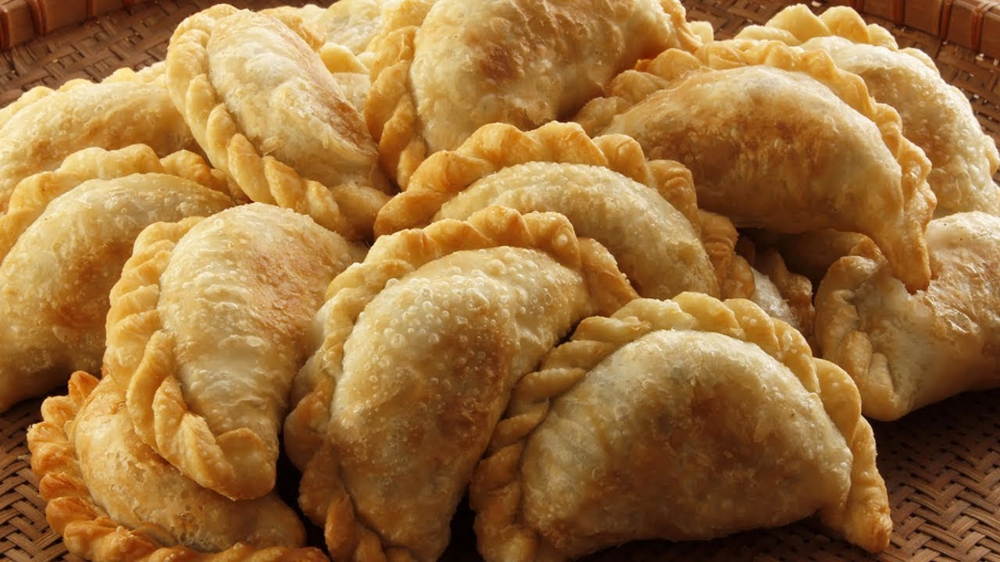

RECETARIO
Empanadas Tucumanas
Cómo replicar el verdadero sabor norteño

El debate de cuál es la mejor empanada Argentina surge cada vez que se habla de esta popular comida. Sin embargo, la tradición nos lleva a las tierras de la provincia de Tucumán, en donde una gran parte de la cultura gira en torno a la preparación de esta comida.
En cuanto a las principales características diferenciales de la empanada tucumana, podemos mencionar la presentación ya que suelen tener forma de media luna; El tamaño, pequeñas y generalmente se comen en mayor cantidad; y fundamentalmente la cantidad de pliegues, donde se acentúa que 13 es el número ideal de repulgues para que la empanada sea perfecta.
A lo largo de esta presentación, vamos a ir aprendiendo paso a paso cómo crear esta comida, para deleitar a los paladares más exigentes.
Vamos a necesitar:
- 500 g. de falda de ternera
- 125 g. de cebolla
- 3 huevos
- 1 cebolleta
- 1/2 cucharada de pimentón
- 1/2 cucharadita de comino
- sal y pimienta negra, a gusto
- aceite de oliva
Para la masa:
- 500 g. de harina de trigo
- 200 g. de agua
- 100 g. de manteca
- 12 g. de sal
Seguí estos pasos:
- Ponemos el matambre en una cazuela y lo cubrimos de agua. Ponemos a cocer la carne con una pizca de sal durante unos 60 minutos. La carne debe quedar tiernísima. Retiramos la carne de la cazuela y guardamos el caldo.
- Cortamos la carne con un cuchillo afilado en dados pequeños, lo más pequeños posible, de modo que la carne quede desmenuzada y la reservamos.
- En una sartén calentamos un chorrito de aceite de oliva y añadimos la cebolla cortada en daditos pequeños. Sofreímos hasta que esté blandita y transparente. Añadimos la carne, la sal, el comino molido y la cayena y seguimos cocinando 5 minutos. Retiramos la sartén del fuego y agregamos el pimentón. Removemos bien para que se integre con el resto de ingredientes y añadimos 150 ml. del caldo de la cocción de la carne.
- Volvemos a poner la sartén al fuego y cocinamos a fuego medio durante unos 10 minutos. Mientras el relleno se enfría, preparamos el resto. Cocemos los huevos, los pelamos y los troceamos en dados. Pelamos la cebolleta y la cortamos en daditos pequeños.
- Añadimos la cebolleta y los huevos troceados a la mezcla de carne de la sartén y removemos para que nos quede un relleno uniforme.
Para la masa:
- En un bol añadimos la harina. Derretimos la manteca de vaca y la vertemos por encima de la harina.
- Añadimos el agua o la misma cantidad del caldo de la cocción de la carne y comenzamos a combinar todos los ingredientes añadiendo una pizca de sal. Volcamos la masa sobre la encimera de la cocina y comenzamos a trabajarla hasta que nos quede lisa y homogénea.
- Debemos amasar hasta que tengamos la grasa bien distribuida por toda la masa, con unos 5 minutos será suficiente.
Las mejores empanadas caseras tucumanas:
- Cogemos una porción de unos 60 gr. y la estiramos con un rodillo dándole forma redondeada. Colocamos la masa en el hueco de la mano y sellamos los bordes de los laterales presionando con los dedos, de tal forma que quede como una barca.
- Rellenamos la barca con dos o tres cucharadas de relleno. Con la punta de los dedos presionamos los bordes de la masa para sellarla. Una vez sellada la iremos doblando sobre sí misma hasta que el borde quede doblado sobre sí mismo. En el paso a paso fotográfico podéis ver cómo hacerlo de forma sencilla.
- Repetimos la operación con toda la masa y vamos dejando las empanadas sobre una bandeja de horno. Con el horno previamente caliente a 200ºC, horneamos las empanadas durante 20 minutos. Retiramos las empanadas del horno y dejamos que se templen para no quemarnos.
Mientras esperás que se hagan las empanadas, sumás un bailecito a la tradición:
Conocé más sobre la provincia que elevó el nivel de las empanadas: